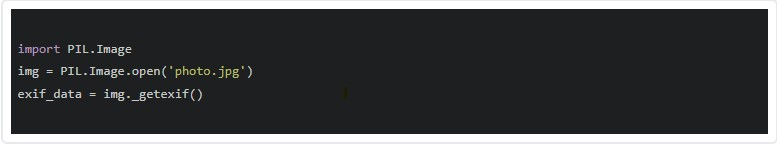
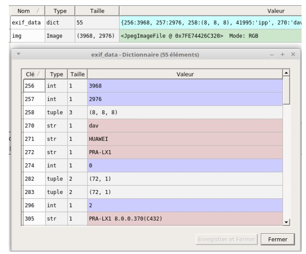

LES FORMAT IMAGES
Un fichier "image" issu d'un appareil photo numérique contient plus qu'une simple image. On trouve en effet des informations sur l'image elle-même (définition, résolution...) mais aussi des informations sur la prise de vue (date et heure, lieu...). Cette spécification des fichiers "image" d'un appareil photo numérique s'appelle EXIF (EXchangeable Image file Format). Ces données contenues dans un fichier "image" d'un appareil photo s'appellent des métadonnées. La plupart des logiciels de retouche photo permettent de lire ces métadonnées. Nous n'allons pas utiliser ce type de logiciel, nous allons plutôt écrire un petit programme Python (plus précisément, nous utiliserons la bibliothèque Python "PIL"). Etape 1 Créez un dossier nommé "exif", enregistrez l'image suivante : "photo.jpg"(clic droit, "Enregistrer sous") dans ce dossier "exif". Etape 2 En utilisant le logiciel Spyder, saisissez et testez le programme suivant (il faudra enregistrer le fichier contenant ce programme dans le dossier "exif" )
Après avoir exécuté le programme, utilisez l'"Explorateur de variables" de Spyder, pour analyser le contenu de la variable "exif_data", vous devriez avoir quelque chose qui ressemble à cela:

Lien externeSource : Wikipédia